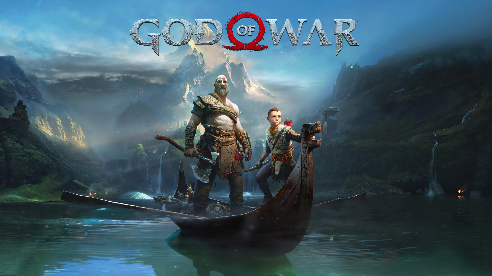
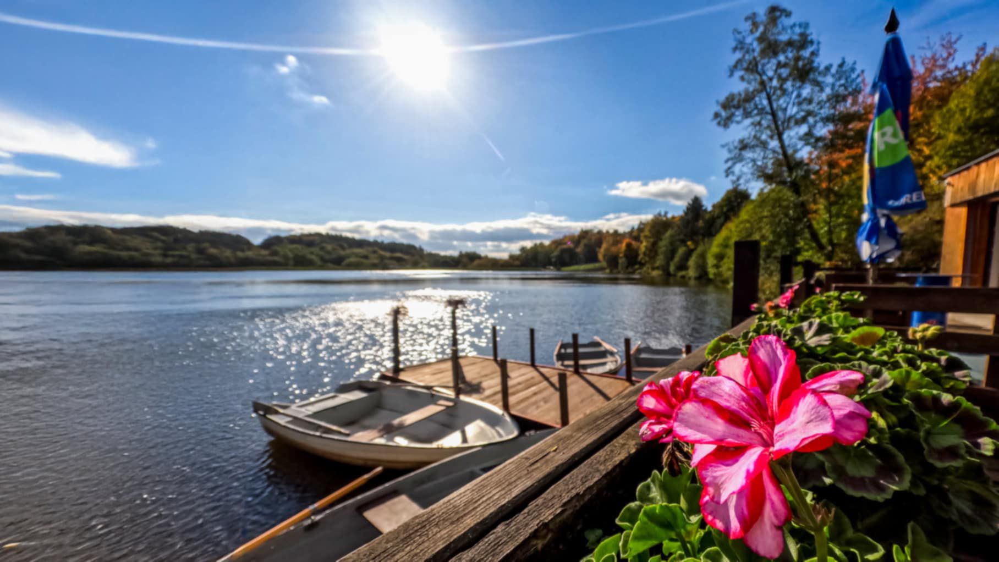

Life
Early life
I was born very young, some may say the youngest person to ever be born. My early years were spent playing with mom and dad, going to preschool and then primary school. We moved when i changed schools so that was convenient. What wasn't convenient was the disappearance of my parents. They were supposed to tke me from school one day but they never showed up, so I went to live with my Aunt May and Uncle Ben.
Teenage Years
My age of teen started when i started attending a gymnasium to pursue better eduction. Everything went well until the fated day. We went on a trip to the local science musem where i took my camera. I was not paying attention when one of the exemplars went missing and bit me. I fell sick for a week. When I woke up something felt different, I felt different. I found out I had gotten powers from whatever bit me, i started sticking to walls, got super strong and my senses got into overdrive. But then tragedy struck, my uncle got shot in a drive-by robbery. I will always remember the last words he said to me: "With great POWER, must also come great RESPONSIBILITY"
Young Adult
I Had to move again to pursue even higher education in Brno of all places. But I found purpose here. There's so much crime and evil here that I rarely get any rest. But that's good, gotta keep myself busy after uncle Ben's death. I only have my aunt left now. So i try to get by day by day. And I can't wait for the Brand New Day(tm).
Sunsets
Who doesn't like a pretty sunset? I personally love them so i try to take a photo every time i see one, so this is a showcase of some of my favourites.

Hobbies

Whenever I'm back home I play darts with my dad. We try to play atleast once a day. I even got my former head teacher to play and some of my past classmates. So we meet sometimes at a pub and play darts while drinking beer and talking about what has happened since we last saw each other. Throwing some 180s isn't as easy as it seems though. Well neither is hitting the wings of the previous dart.

I also really enjoy playing computer games, well who doesn't nowaday. The best game I have ever played is God of War where you play as the literal embodiment of male fantasy himself, Kratos. The game is only one from the series of many but it will always have a special place in my heart.
Summer Job

For half a decade every summer, this place is my daily destination. Day spent out in the fresh air, pouring beer and making money, what else could a guy want? I started when i couldn't even drive yet now I am one of the most experienced guys there. A summer job turned into seasonal event. At first I was only lending small ships to people who wanted to row on the open water, but gradually I got closer and closer to the mythical beer tower. He who controls the tower, controls everything. So now I do almost everyhting, from the beer through money handling all the way to the delivery managment.
Formula 1
I started watching F1 in 2022 and since then it has become and irreplaceable part of my life. Anyway, here's the results of the 2023 season in which my favourite driver broke so many records. and some of my F1 related photos.
| POS. | DRIVER | TEAM | PTS |
|---|---|---|---|
| 1 | Max Verstappen | Red Bull Racing | 575 |
| 2 | Sergio Pérez | Red Bull Racing | 285 |
| 3 | Lewis Hamilton | Mercedes | 234 |
| 4 | Fernando Alonso | Aston Martin | 206 |
| 5 | Charles Leclerc | Ferrari | 206 |
| 6 | Lando Norris | McLaren | 205 |
| 7 | Carlos Sainz | Ferrari | 200 |
| 8 | George Russell | Mercedes | 175 |
| 9 | Oscar Piastri | McLaren | 97 |
| 10 | Lance Stroll | Aston Martin | 74 |
| 11 | Pierre Gasly | Alpine | 62 |
| 12 | Esteban Ocon | Alpine | 58 |
| 13 | Alexander Albon | Williams | 27 |
| 14 | Yuki Tsunoda | AlphaTauri | 17 |
| 15 | Valtteri Bottas | Alfa Romeo | 10 |
| 16 | Nico Hulkenberg | Haas | 9 |
| 17 | Daniel Ricciardo | AlphaTauri | 6 |
| 18 | Zhou Guanyu | Alfa Romeo | 6 |
| 19 | Kevin Magnussen | Haas | 3 |
| 20 | Liam Lawson | AlphaTauri | 2 |
| 21 | Logan Sargeant | Williams | 1 |
| 22 | Nyck de Vries | AlphaTauri | 0 |